왜 지금 보안 감사인가요
영상은 X에 올라온 글 하나로 시작해요. 사람들이 이번 달을 'Black October'라고 부른다는 글이에요. 한 달도, 한 주도 아니고 48시간 사이에 큰 보안 사고가 27건 넘게 터졌다는 내용이에요. 맨 아래 줄에는 PHP(PHP: Hypertext Preprocessor) 취약점이 10점 만점에 9.2점이라고 적혀 있어요.
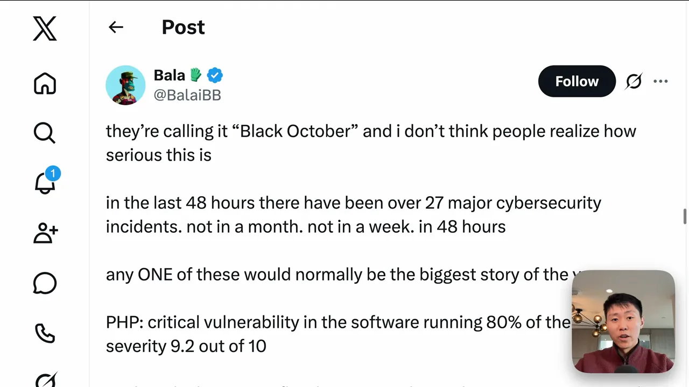
이어지는 슬라이드는 피해 제품을 아이콘으로 늘어놔요. PHP, Node.js, Java, GitLab이 나란히 있고, PHP 밑에만 빨간 'CVSS(Common Vulnerability Scoring System) 9.2' 딱지가 붙어 있어요. 위쪽에는 점수 출처로 NIST(National Institute of Standards and Technology)가 적혀 있어요. 발표자는 Signal과 WordPress도 사고 목록에 있었다고 말해요.
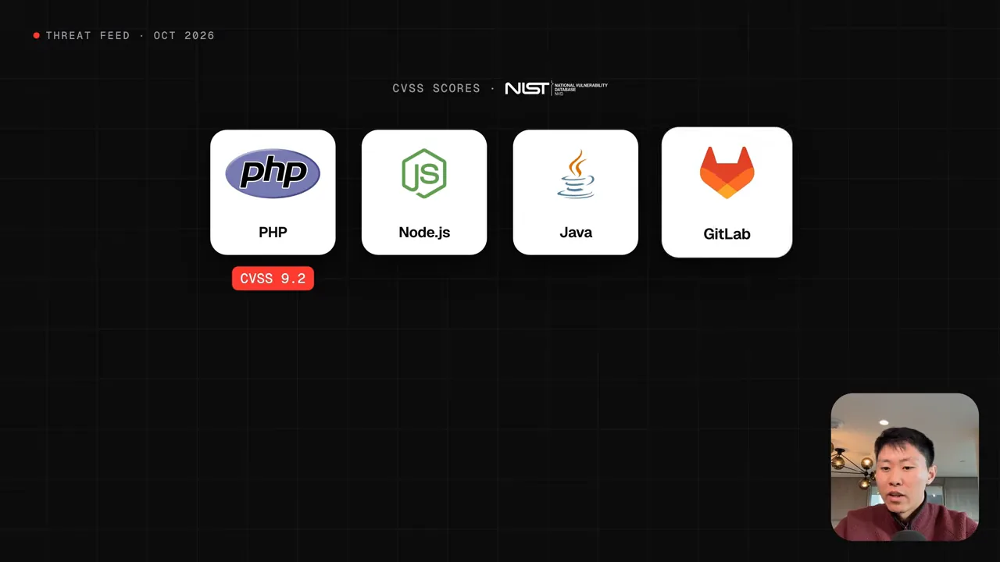
발표자는 원인을 오픈 웨이트 모델에서 찾아요. 누구나 내려받아 쓸 수 있는 모델이 똑똑해지면서, 이걸로 남의 시스템을 공격하기가 쉬워졌다는 거예요. 그래서 자기가 6개월 동안 만든 장부 관리 앱 bookzero.ai를 직접 점검해 봤어요. 실제 사용자가 가입하고 있는 서비스예요.
당부도 하나 해요. 점검했는데 큰 구멍이 나왔다면 먼저 키를 교체하고, 새 기능보다 보안을 먼저 챙기라는 거예요.
security-audit 스킬 설치하고 실행하기
스킬은 GitHub의 cloudflare/security-audit-skill 저장소에 있어요. 발표자는 README를 내려가며 감사가 어떤 순서로 도는지 보여 줘요. 화면에 보이는 2~6단계는 이래요. 사냥꾼 에이전트들이 구역을 나눠 찾고(2), 새 검증자가 후보마다 반박을 시도하고(3), 결과를 confirmed·needs_validation·rejected로 나눠 적고(4), 새 에이전트가 다시 확인한 뒤(5), 보고서를 써요(6).
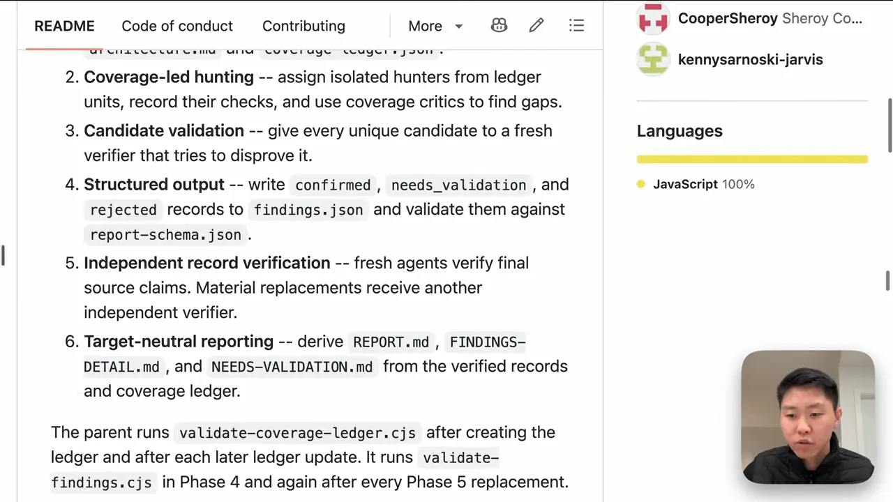
설치
설치는 npx skills add 한 줄이에요. 발표자는 프로젝트 단위로 설치했어요. 실행하면 어떤 에이전트에 넣을지 묻는 목록이 뜨는데, 여기서 Claude Code를 골랐어요. 다음 화면에서 설치 범위를 Project(현재 폴더에 설치)로 두고, 방식은 심링크로 했어요.
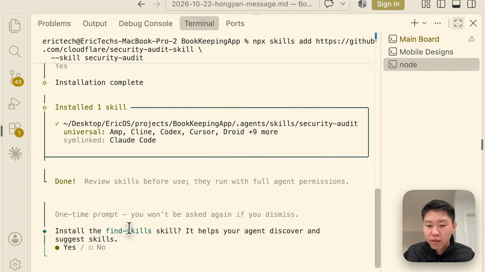
.agents/skills/security-audit 경로와 'symlinked: Claude Code'가 찍혀요. 마지막 질문은 find-skills 스킬도 깔지 묻는 거예요. 영상 01:46에서 보기npx skills add https://github.com/cloudflare/security-audit-skill \
--skill security-audit
# 모든 프로젝트에 쓰려면 끝에 --global 을 붙여요실행
README의 Usage 항목에는 그대로 붙여 넣을 수 있는 요청 문장이 세 개 있어요. 발표자는 첫 번째 문장을 복사해 Claude Code에 넣었어요.
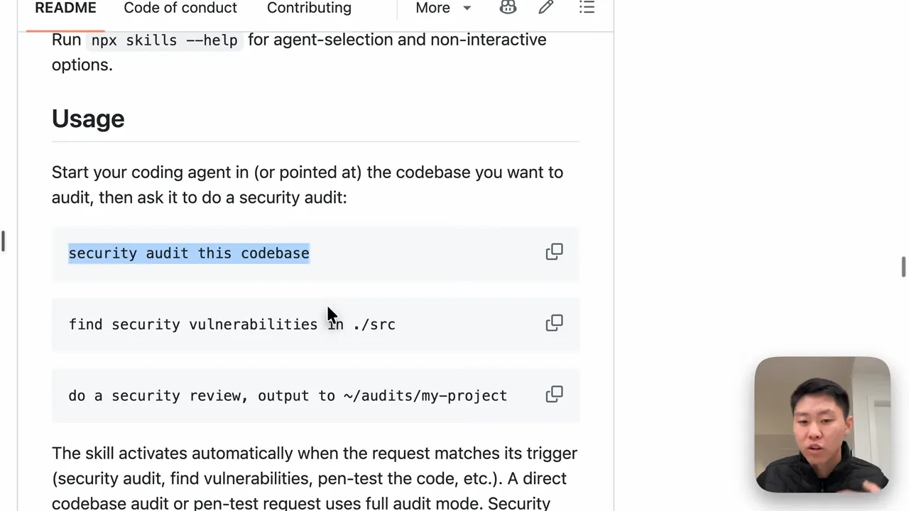
스킬을 확실히 부르고 싶으면 슬래시로 입력해요. 아래 화면에서 /sec까지 치자 /security-audit와 /security-review 두 개가 후보로 떠요. 두 번째는 Claude Code에 원래 있는 명령으로, 마지막 섹션에서 비교해요.
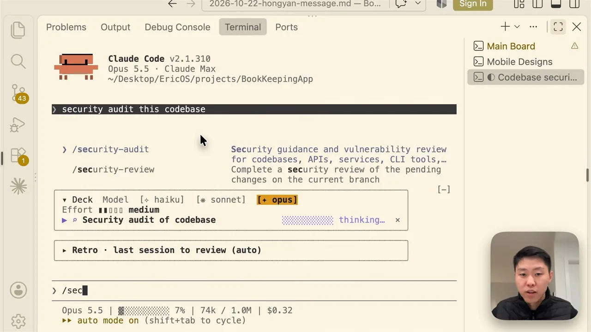
감사가 시작되면 백그라운드 에이전트 세 개가 떠요. 화면의 Hunter h1은 인증 없이 열린 곳, h2는 기계가 부르는 호출, h3은 팀 간 데이터 분리, 곧 테넌트 격리를 맡아요. 아래 main 쪽에서는 페이지 파일을 읽고 멱등성을 확인하는 작업이 함께 돌아요.
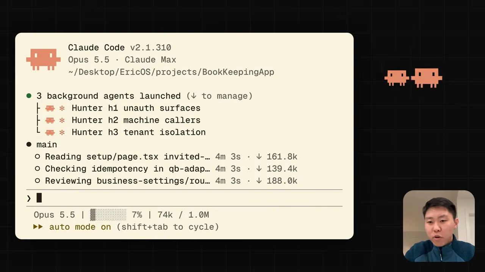
보고서: 후보 26개 중 21개가 진짜였어요
첫 보고서는 꼭 확인할 것 세 가지를 맨 위에 올렸어요. 비밀 키를 담은 app_settings 테이블을 로그인한 사용자 누구나 읽을 수 있고, free_credits_ledger 테이블은 공개 키만으로 읽힐 수 있고, 일부 데이터베이스 규칙이 사람은 확인하지만 팀은 확인하지 않는다는 내용이에요.
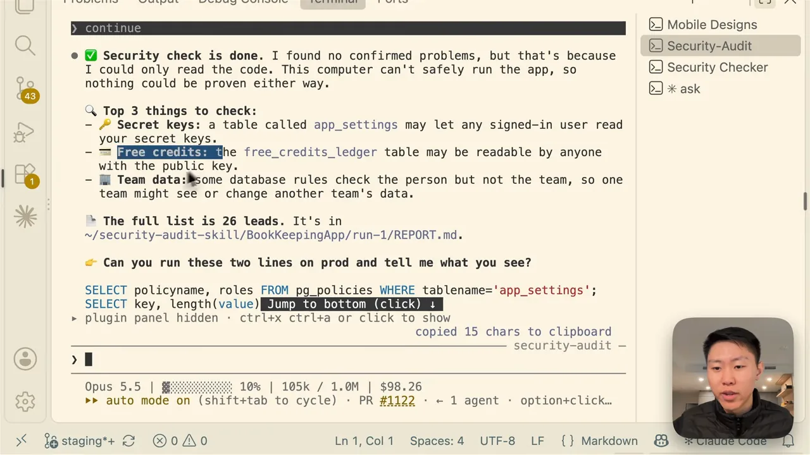
SELECT 쿼리까지 내줘요. pg_policies를 조회하는 걸 보면 행 단위 보안 규칙을 의심하고 있어요. 영상 02:37에서 보기발표자는 이 보고서를 그대로 믿지 않았어요. 다른 서브에이전트 여럿을 띄워, 임시 데이터베이스에서 항목마다 진짜 뚫리는지 확인시켰어요. 아래 슬라이드가 그 구조예요. 왼쪽 Finder(찾은 쪽)가 넘긴 후보를 오른쪽 Checker(새 에이전트)가 하나씩 검사해요.
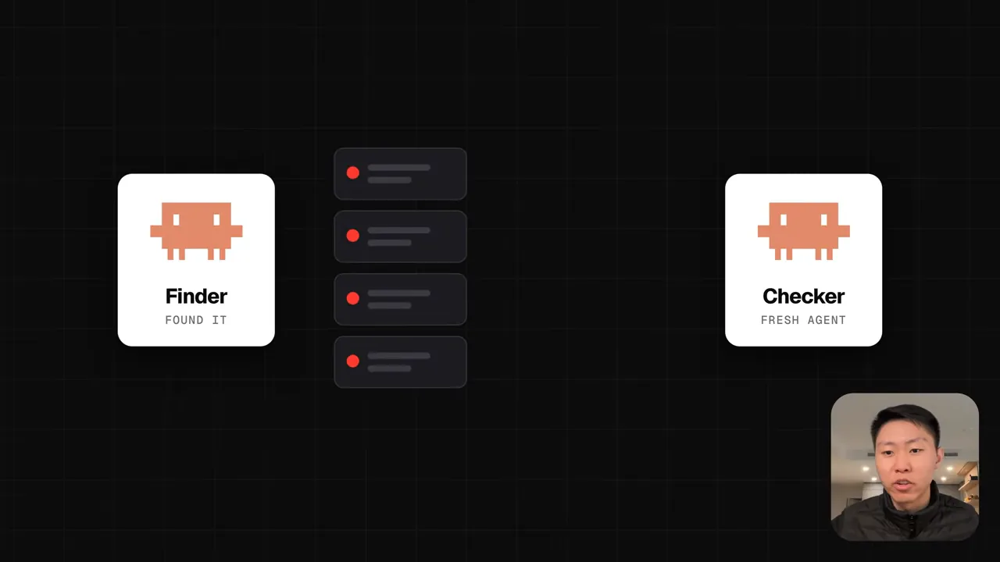
결과는 후보 26개 중 21개가 진짜, 3개가 가짜, 2개는 아직 확인 못 함이었어요. 진짜인 것은 티켓 18장으로 묶여 모두 Ready 칸에 들어갔어요. 아래 표는 그 티켓을 심각도 순으로 정리한 화면이에요. 맨 위 #1101과 #1102 두 장만 빨간 Worst예요.
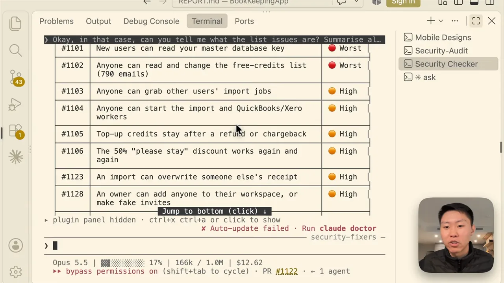
| 티켓 | 무엇이 문제인가요 | 심각도 |
|---|---|---|
| #1101 | 새 사용자가 마스터 데이터베이스 키를 읽을 수 있어요 | Worst |
| #1102 | 누구나 무료 크레딧 목록(이메일 790개)을 읽고 바꿀 수 있어요 | Worst |
| #1103 | 다른 사용자의 가져오기 작업을 가로챌 수 있어요 | High |
| #1104 | 누구나 가져오기와 QuickBooks/Xero 작업을 시작할 수 있어요 | High |
| #1105 | 환불이나 지불 거절 뒤에도 충전한 크레딧이 남아요 | High |
| #1106 | 50% '떠나지 마세요' 할인이 몇 번이고 다시 적용돼요 | High |
발표자는 개발자 대부분이 만드는 데만 몰두한다고 말해요. 아래 슬라이드는 그 균형을 저울로 그려요. 처음엔 왼쪽 building 쪽에 기능 아이콘이 잔뜩 쌓여 기울어 있다가, 오른쪽에 security 방패가 올라가며 수평이 돼요.
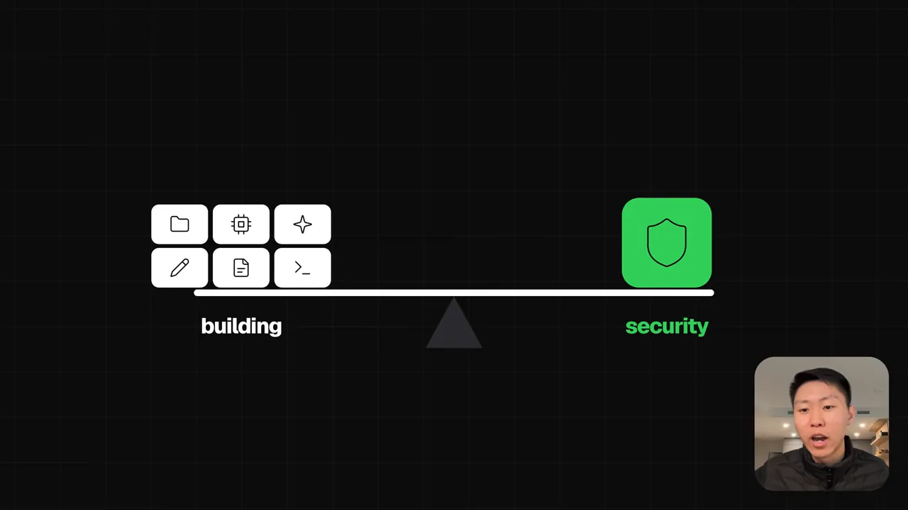
티켓으로 쪼개 고치고 다시 감사하기
보고서를 티켓으로 바꾸는 데는 Matt Pocock의 skills 모음에 있는 Wayfinder 스킬을 썼어요. 그다음 발표자가 '소프트웨어 팩토리'라고 부르는 자기 도구 super-board를 돌렸어요. 아래 슬라이드처럼 /super-board run 한 번이면 티켓이 'READY → BUILDING → QA → REVIEW' 칸을 따라 흘러가요.
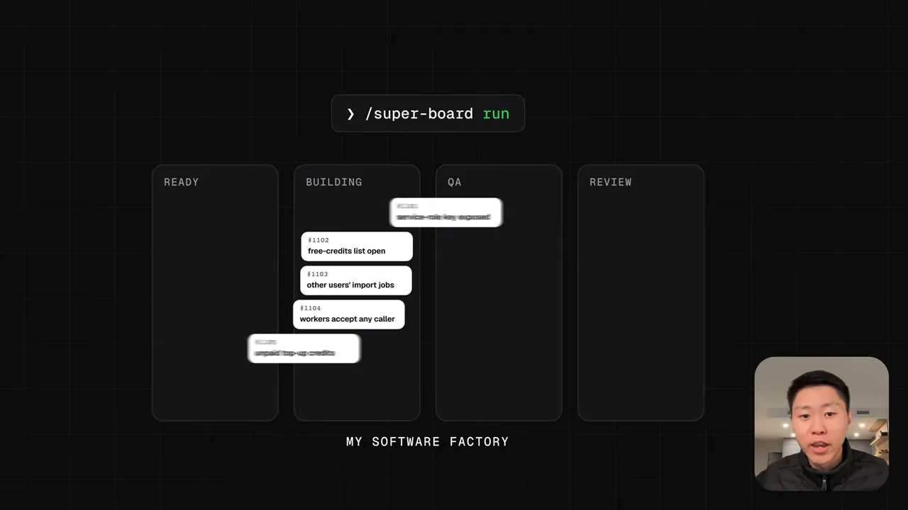
이 단계는 Codex로 돌렸어요. Claude 사용량이 바닥나서라고 해요. 실제 GitHub 프로젝트의 칸반 보드를 보면 QA 칸에 #1101 티켓이 올라와 있어요. 보고서 맨 위에 있던 그 문제예요.
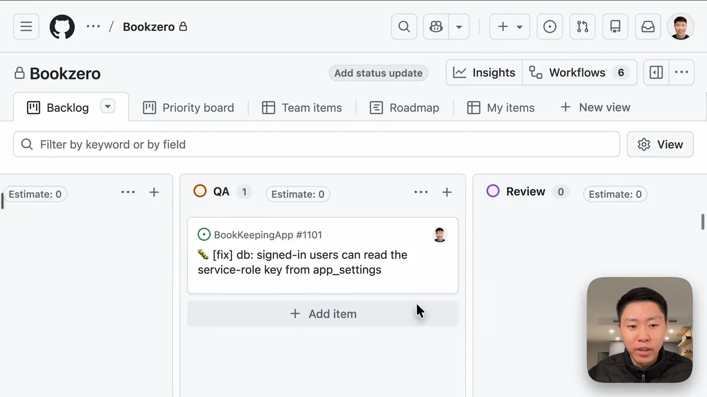
작업이 끝난 뒤 채팅 화면이에요. 모든 것이 머지돼 3.55.2 버전으로 나갔고, 티켓 16장이 닫혀 Done이 됐다고 적혀 있어요. 운영 서버 두 대도 최종 점검을 통과했어요. 발표자는 추가 티켓까지 합쳐 대략 18장이라고 말해요. 보드의 Ready, Building, QA, Review 칸은 모두 0이 됐어요.
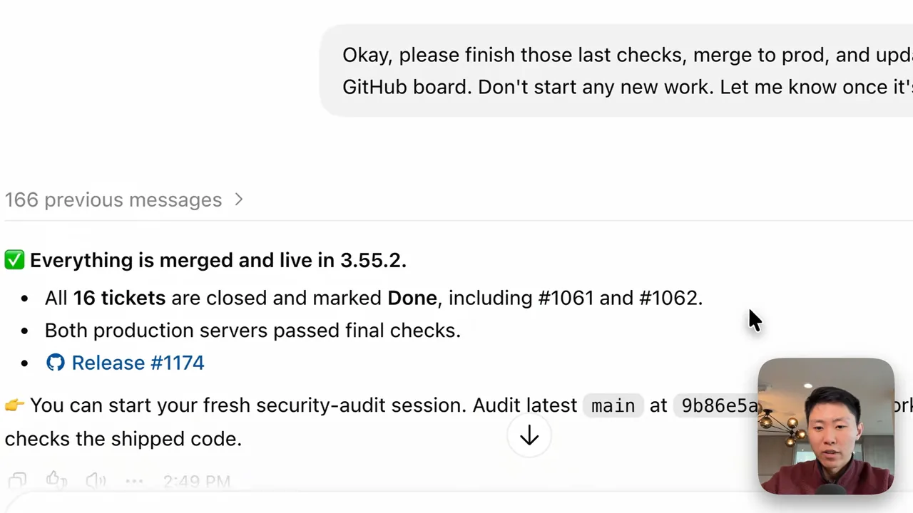
그래서 같은 감사를 한 번 더 돌렸어요. 결과 화면에는 진짜 버그 2개, 둘 다 low 등급이라고 나와요. 보기 권한으로 강등된 팀원이 영수증 매칭을 바꿀 수 있고, 같은 팀원이 가져오기 작업을 지울 수 있다는 문제예요. 다른 계정의 데이터를 볼 수 있는 버그는 없다고 적혀 있어요.
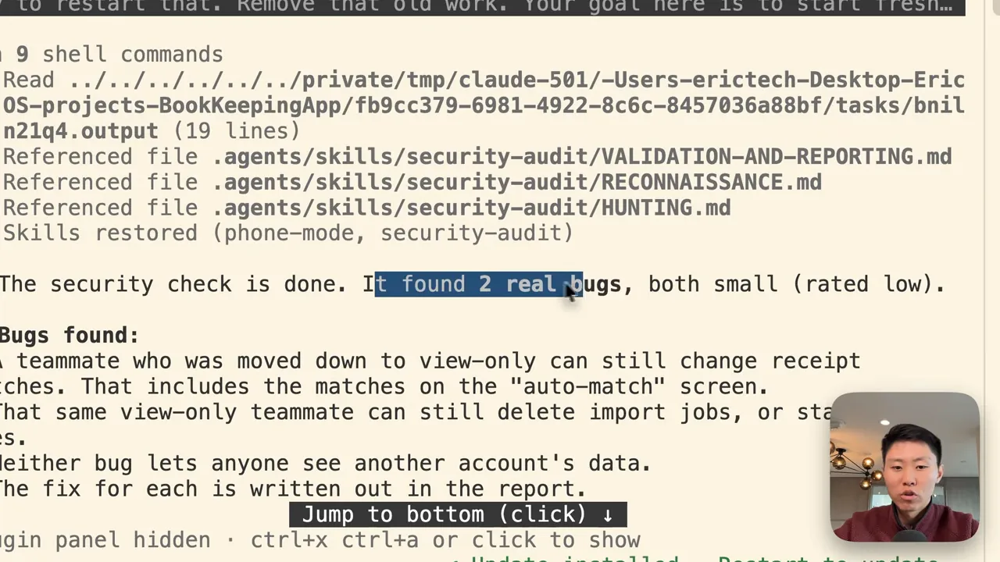
처음부터 끝까지 숫자가 어떻게 줄었는지 한 그림으로 모아 봤어요. 영상 여러 화면에 흩어져 있던 숫자예요.
발표자가 정리한 흐름은 아래 슬라이드의 고리예요. Audit에서 시작해 Tickets, Agents, Merge를 거쳐 Re-audit으로 돌아와요. 재감사에서 또 고칠 게 나오면 고리를 한 번 더 돌아요.
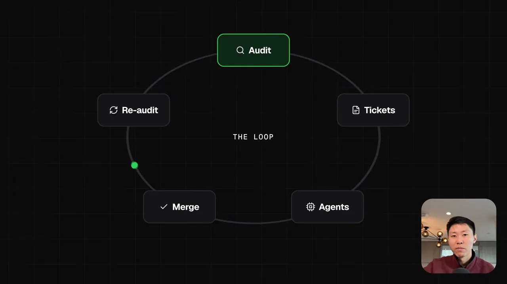
Anthropic security-review와는 무엇이 다른가요
이름이 비슷한 도구가 하나 더 있어요. Anthropic의 claude-code-security-review 저장소예요. 소개 문구는 'Claude로 코드 변경을 분석해 보안 취약점을 찾는 GitHub Action'이에요.
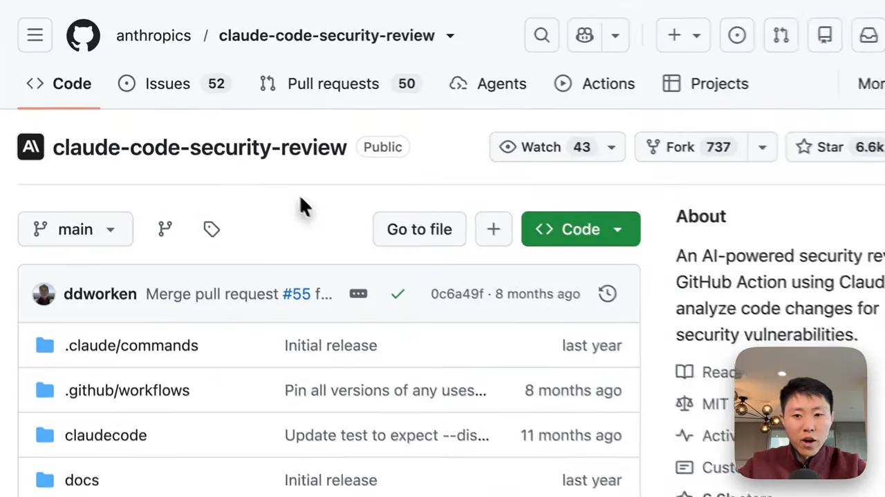
발표자는 둘을 맞대 놓고 비교해요. 슬라이드에는 왼쪽에 Anthropic의 Claude Code Security Review(별 6.6k), 오른쪽에 Cloudflare의 Security Audit skill(별 48.5k)이 있어요.
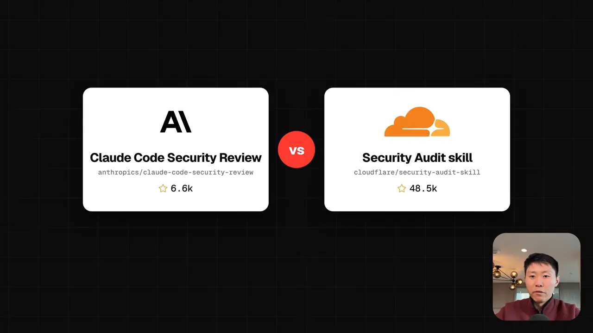
발표자가 Codex에게 둘의 차이를 물어 받은 답이 아래 화면이에요. Cloudflare 쪽은 '찾은 다음 증거에 반박한다', Anthropic 쪽은 '제안된 코드 변경을 하나씩 확인한다'로 요약돼 있어요. Anthropic 쪽은 기본으로 서비스 과부하, 속도 제한 누락, 열린 리다이렉트는 건너뛴다는 줄도 보여요.
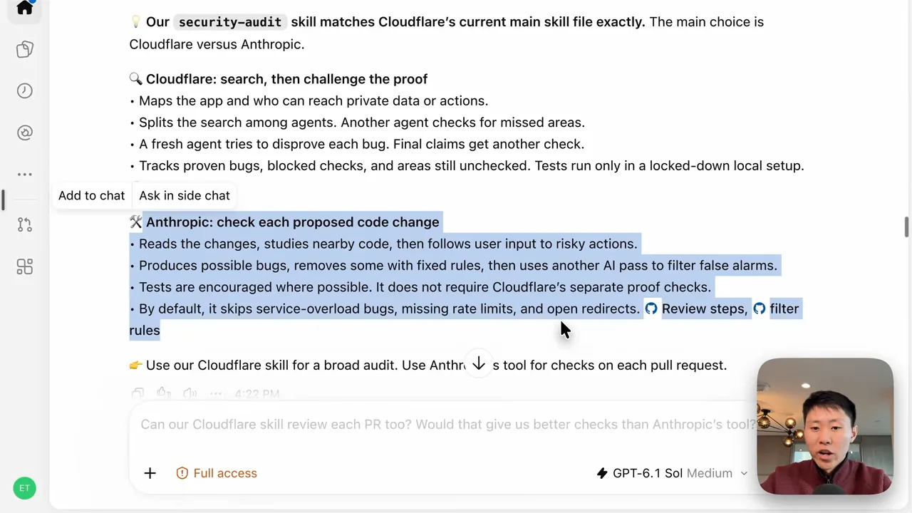
| Cloudflare security-audit | Anthropic security-review | |
|---|---|---|
| 보는 범위 | 코드베이스 전체 | 최근 변경과 그 주변 코드 |
| 찾는 방식 | 앱 구조를 그리고 에이전트들이 나눠 찾은 뒤, 새 에이전트가 버그마다 반박을 시도해요 | 변경을 읽고 사용자 입력이 위험한 동작까지 가는지 따라가요. 다른 AI(Artificial Intelligence)가 한 번 더 오탐을 걸러요 |
| 언제 돌리나요 | 한 달에 한 번이나 2주 스프린트마다 | 풀 리퀘스트마다 |
Anthropic 쪽은 풀 리퀘스트에서 바뀐 줄만 봐요. 아래 슬라이드 위쪽에 'ONLY THE CHANGED LINES'라고 적혀 있고, 변경된 줄 옆에 'claude · security review' 댓글이 'HIGH' 표시와 함께 붙어 있어요.
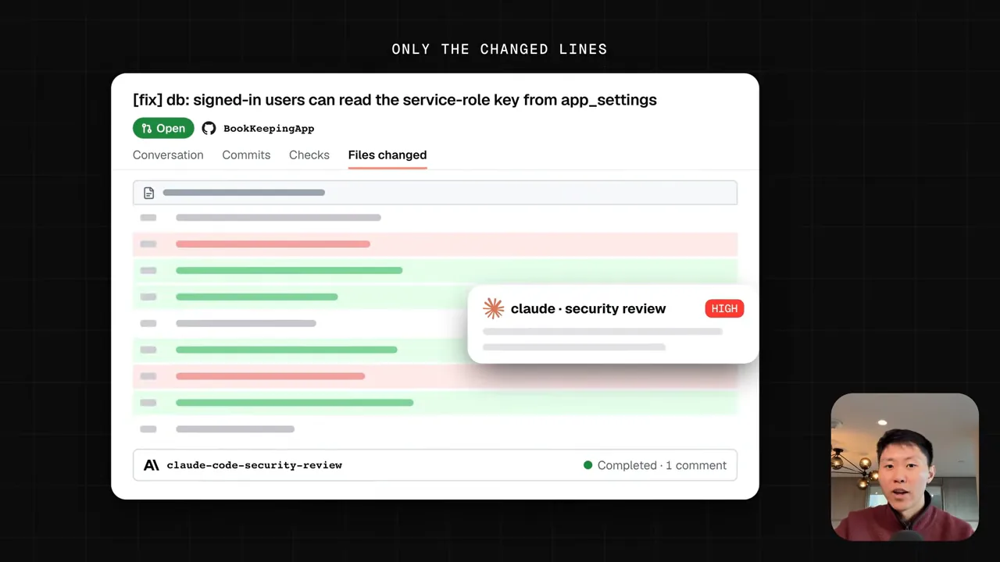
Cloudflare 스킬은 드물게 돌려요. 달력 슬라이드에는 한 달에 한 번, 또는 2주 스프린트마다 한 번이라는 두 선택지가 나와요. 에이전트가 놓친 취약점이 코드베이스에 쌓이지 않았는지 주기적으로 확인하는 용도예요.
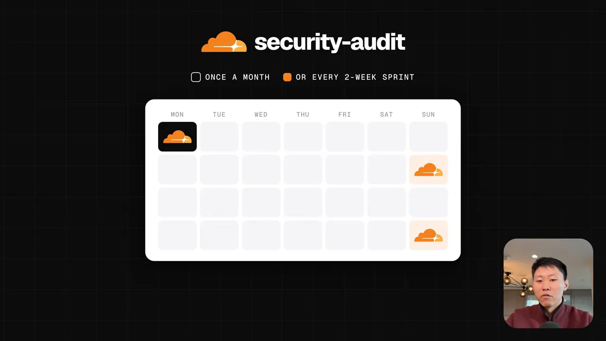
마지막 슬라이드가 고르는 기준이에요. 'Never audited?' 아래에 Security Audit skill 카드가 있고, 'RUN IT FIRST · WHOLE CODEBASE'라고 적혀 있어요. 한 번도 점검을 안 했다면 이것부터 돌리고, 풀 리퀘스트마다 돌릴 거라면 Anthropic의 security-review를 쓰라는 거예요.
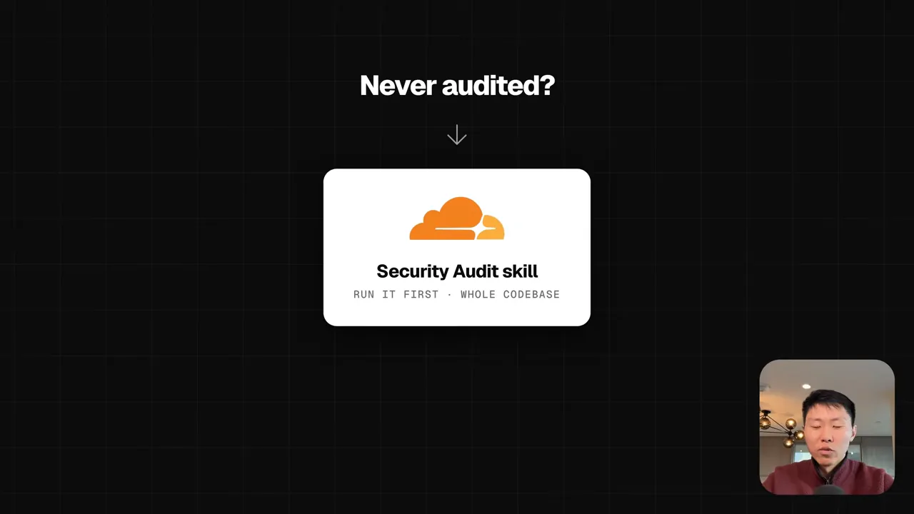